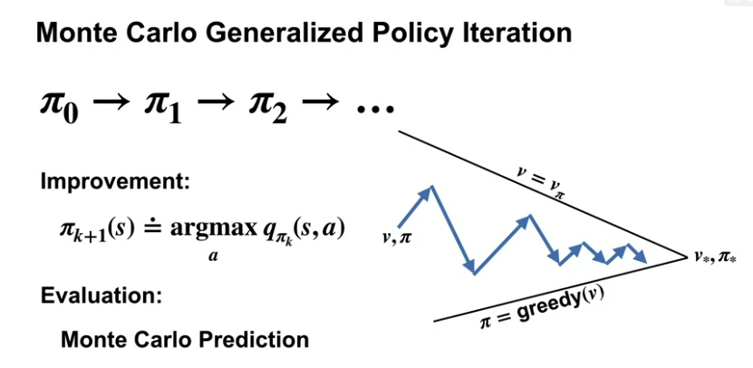

Reinforcement Learning Specialization - Coursera - course 2 - Sample-based Learning Methods
From University of Alberta. My notes on course 2 - Fundamentals of Reinforcement Learning
my notes on course 1
specialization roadmap - course 2 - Sample-based Learning Methods
course 2 - In Course 2, we built on these ideas and design algorithms for learning without a model of the world. We study three classes of methods designed for learning from trial and error interaction. We start with Monte Carlo methods and then move on to temporal difference learning, including Q learning. We conclude Course 2 with an investigation of methods for planning with learned models.
Week 1 - Monte-Carlo Methods for Prediction & Control
Week 2 - Temporal Difference Learning Methods for Prediction
Week 3 - Temporal Difference Learning Methods for Control
Week 4 - Planning, Learning & Acting
5/25/21 - Course 2 - Week 1 - Monte-Carlo Methods for Prediction & Control
Module 1 Learning Objectives
Lesson 1: Introduction to Monte-Carlo Methods
- Understand how Monte-Carlo methods can be used to estimate value functions from sampled interaction
- Identify problems that can be solved using Monte-Carlo methods
- Use Monte-Carlo prediction to estimate the value function for a given policy.
Lesson 2: Monte-Carlo for Control
- Estimate action-value functions using Monte-Carlo
- Understand the importance of maintaining exploration in Monte-Carlo algorithms
- Understand how to use Monte-Carlo methods to implement a GPI algorithm
- Apply Monte-Carlo with exploring starts to solve an MDP
Lesson 3: Exploration Methods for Monte-Carlo
- Understand why exploring starts can be problematic in real problems
- Describe an alternative exploration method for Monte-Carlo control
Lesson 4: Off-policy learning for prediction
- Understand how off-policy learning can help deal with the exploration problem
- Produce examples of target policies and examples of behavior policies
- Understand importance sampling
- Use importance sampling to estimate the expected value of a target distribution using samples from a different distribution
- Understand how to use importance sampling to correct returns
- Understand how to modify the Monte-Carlo prediction algorithm for off-policy learning.
Lesson 1: Introduction to Monte Carlo Methods
Reading Chapter 5.0-5.5 (pp. 91-104) in the Reinforcement Learning textbook
Although a model is required, the model need only generate sample transitions, not the complete probability distributions of all possible transitions that is required for dynamic programming (DP).
Video What is Monte Carlo by Martha
By the end of this video you will be able to understand how Monte Carlo methods can be used to estimate value functions from sampled interaction and identify problems that can be solved using Monte Carlo methods.
Video Using Monte Carlo for Prediction by Martha
By the end of this video, you will be able to use Monte Carlo prediction to estimate the value function for a given policy.
Lesson 2: Monte Carlo for Control
Video Using Monte Carlo for Action Values by Adam
By the end of this video, you’ll be able to estimate action-value functions using Monte Carlo and understand the importance of maintaining exploration in Monte Carlo algorithms.
Video Using Monte Carlo methods for generalized policy iteration by Adam
By the end of this video, you will understand how to use Monte Carlo methods to implement a generalized policy iteration GPI algorithm.

Video Solving the BlackJack Example by Adam
By the end of this video, you’ll be able to apply Monte Carlo with Exploring Starts to solve an example MDP.
Lesson 3: Exploration Methods for Monte Carlo
Video Epsilon-soft policies by Adam
By the end of this video you will understand why exploring starts can be problematic in real problems and you will be able to describe an alternative expiration method to maintain exploration in Monte Carlo control.
Lesson 4: Off-policy Learning for Prediction
Video Why does off-policy learning matter? by Martha
By the end of this video you will be able to understand how off policy learning can help deal with the expiration problem. You will also be able to produce examples of Target policies and examples of behavior policies.
The key points to take away from today are that off policy learning is another way to obtain continual exploration. The policy that we are learning is called the target policy and the policy that we are choosing actions from is the behavior policy.
Video Importance Sampling by Martha
By the end of this video, you will be able to use importance sampling to estimate the expected value of a target distribution using samples from a different distribution.
Video Off-Policy Monte Carlo Prediction by Martha
By the end of this video, you will be able to understand how to use important sampling to correct returns, and you will understand how to modify the Monte Carlo prediction algorithm for off-policy learning.
Video Emma Brunskill: Batch Reinforcement Learning
Video Week 1 Summary by Martha
Reading Chapter 5.10 (pp. 115-116) in the Reinforcement Learning textbook